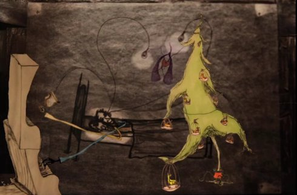

A Brief Spark Bookended By Darkness

Brent Green
|
US 2018 B+M+P+V: Brent Green
|
Tuesday 16 oct 8.30 pm werkstattkino
A BRIEF SPARK is characterized by Green’s spindly drawing style and
musical score accompanying it which include spoken lyrics in the
artist’s quivering voice. The story he recounts is caught up in
despair and apprehension – as he seeks comfort by losing himself in
his love of another. The world that Green presents is so intimate as
to verge on the claustrophobic, a startling carnival set-up in a
cramped bedroom.
(Andrew Edlin Gallery)
Brent Green's animated cinema has the flavour of the silent cinema of the beginnings, with intertitles and flickering lights. Just like this cinematic genre, it has the fundamental virtue of exhibiting the grammar of cinema itself.
Brent Green Born 1978. He is a self-taught, animated filmmaker living and working in rural upstate New York. A 2005 Creative Capital grantee, Green’s sculptures, films, live performances and drawings have been exhibited in venues ranging from city rooftops to the Museum of Modern Art (New York), The Kitchen (New York), The Hammer Museum (Los Angeles), The Berkeley Art Museum, The Walker Art Center (Minneapolis) and the Sundance Film Festival (Park City, UT). His art is in the permanent collections of public institutions including The Museum of Modern Art (New York), the American Folk Art Museum (New York) and The Hammer Museum (Los Angeles).
|
| Films Walt Whitman’s Brain 2007 – Weird Carolers 2009 – Gravity Was Everywhere Back Then 2010 – A Brief Spark 2018
|